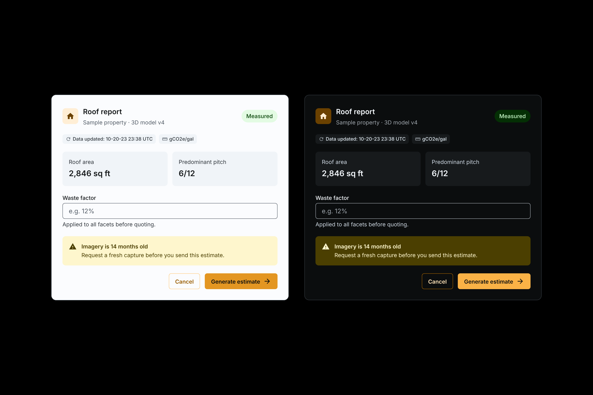
Hijinks Design System
Turning documentation into a living product
Geospan’s platform, from 3D roof purchasing to estimation tools and analytics dashboards, ran on documentation nobody trusted. In 2024 I led the work to turn it into a living product: one searchable home for components, patterns, accessibility rules, token mappings and the reasons behind each decision. In 2026 I rebuilt the Figma library on variables to show how I’d run it today.
What I built
A five-part documentation blueprint, a three-tier token system synced between Figma and code, and Geospan’s 20 highest-traffic components rebuilt on Joy UI.
What I owned
The 40-component audit, the documentation framework, token architecture and Figma libraries, delivered with Geospan’s front-end engineers.
What changed
About 60% fewer duplicate component builds within two quarters, tracked through pull request review tags.
Figma components mapped to Joy UI props · 2024
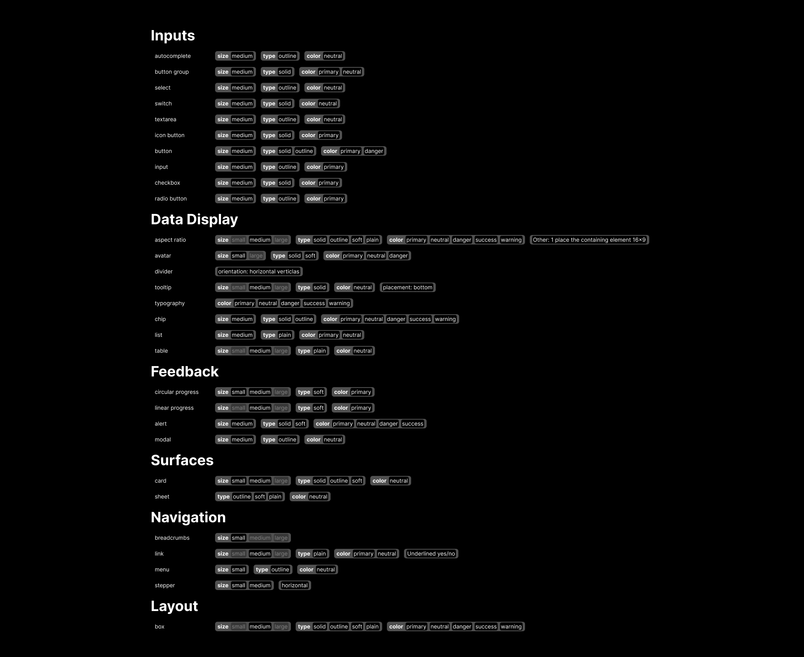
(opens full size)Fragmented blueprints, wasted sprints
With no single source of truth for UI patterns, Geospan spent product time on repeat work:
Docs nobody trusted
Component pages were inconsistent, incomplete and disconnected from live code, so engineers guessed during implementation.
No record of “why”
Designers and PMs had no record of design rationale, so teams forked patterns they didn’t understand and created duplicate components.
The onboarding tax
New designers and engineers took weeks to find their footing, and often rebuilt legacy patterns by accident.
Auditing components across products · 2024
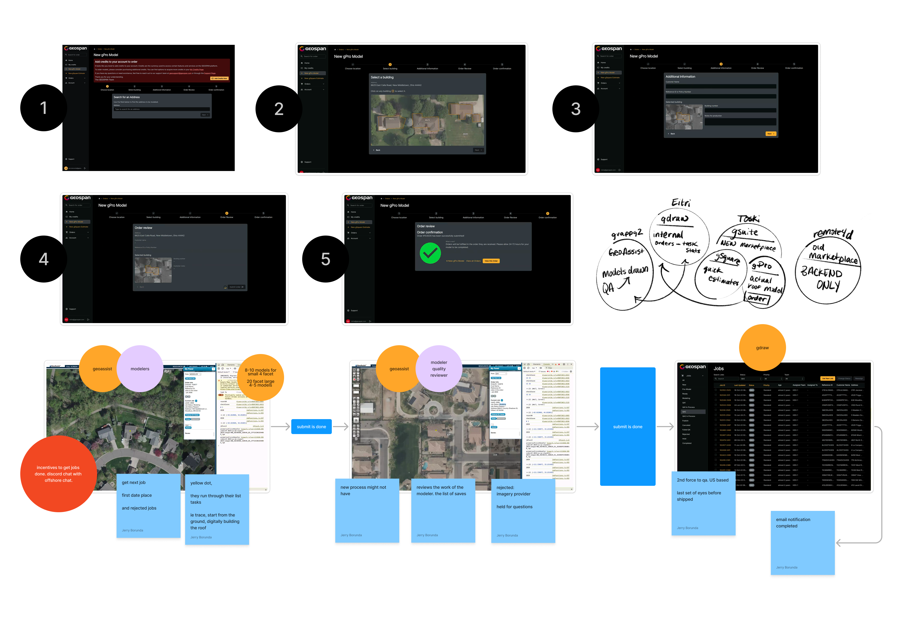
(opens full size)The blueprint framework
We treated documentation as a product. Every component page follows the same five-part blueprint:
Purpose
When to use it, and why it exists.
Anatomy
The component’s structural zones and every state.
Tokens used
The exact color, spacing and type tokens it uses.
Accessibility
Keyboard, screen-reader and contrast rules.
Do / Don’t
Side-by-side examples of correct and incorrect use.
The quick-start engine
Checklists and task guides for Geospan’s most complex, most frequent work, such as editing vector map components and styling spatial map layers.
Three-tier tokens, in sync
Core, semantic and component tokens, synced between Figma and code by an automated pipeline. The top 20 highest-traffic components were rebuilt on it first.
A component page built on the blueprint · 2024
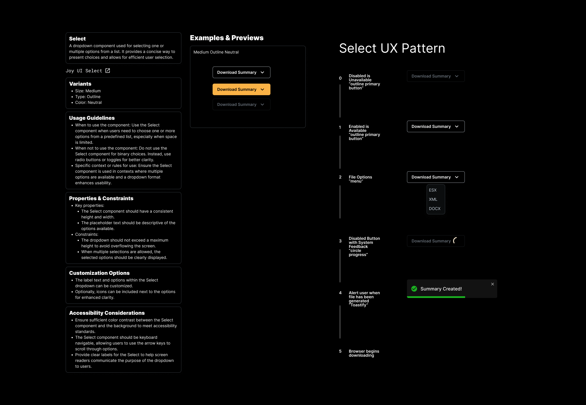
(opens full size)Figma welcome and read-me · 2024
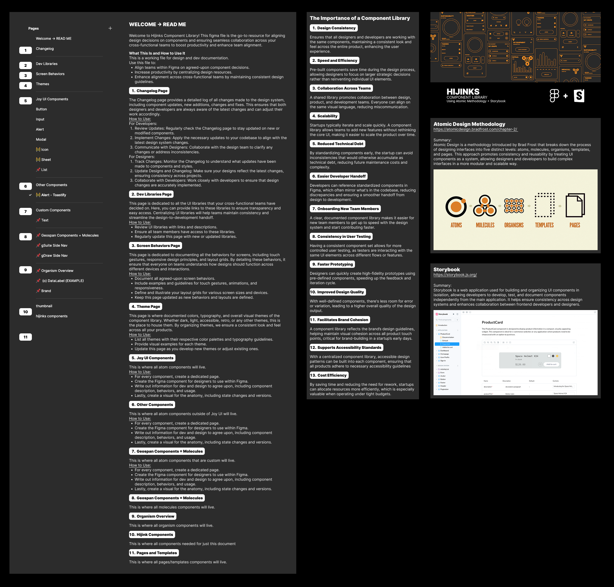
(opens full size)Research, audit, pilot, roll out
Discovery
Interviews with designers, engineers and PMs to map where day-to-day workflow friction happened.
The 40-component audit
Dissected more than 40 components and patterns across products to find structural inconsistencies and duplicates.
Pilot
Built reusable doc templates and piloted them on the highest-traffic components to prove the layout.
Rollout
Launched the live documentation alongside hands-on training sessions and adoption tracking.
Launch timeline · 2024
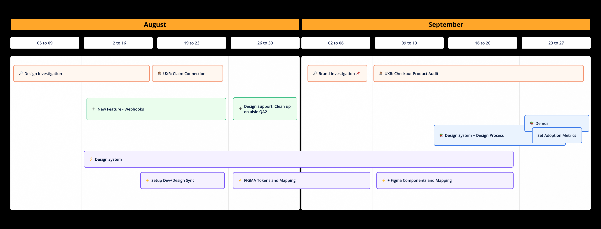
(opens full size)The calls that shaped the system
Build on Joy UI, not from scratch
Engineering already shipped Joy UI. Mapping every Figma component to Joy’s variant, color and size props meant design matched code by default. The tradeoff: we inherited Joy’s constraints, and Geospan-only pieces like the VChip data chip lived in their own layer.
Pilot 20 components, not 40
The highest-traffic components carried most of the duplication. Proving the template there earned buy-in before we scaled it to the rest.
Deprecate, don’t delete
Variants like Button Soft and Solid Success stayed in the library, marked deprecated, so existing screens kept working while new work moved to the supported set.
The same five questions on every page
A fixed template made pages slower to write but much faster to read. Engineers learned exactly where each answer lives.
Seamless alignment
Treating documentation as a product changed how Geospan built UI:
Reimplementations cut
Duplicate component builds and accidental UI rebuilds fell about 60% within two quarters, tracked through pull request review tags.
Accessibility by default
Accessibility rules sat on every component page, so they were applied during design instead of caught in QA.
One workspace
Designers and engineers stopped bouncing between disconnected files and worked from one synchronized pipeline.
Tokens for the default dark theme · 2024
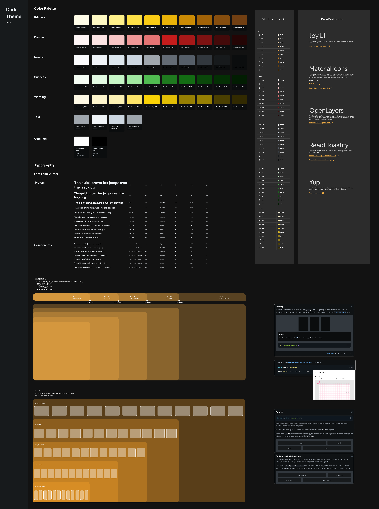
(opens full size)The 2026 rebuild
The 2024 fundamentals held up, but the Figma library had drifted. In 2026 I decoded the original file, audited it, and rebuilt it with a Figma plugin I wrote that generates the whole library: variables, styles, components, docs pages and the images below. The visuals in this section come from that rebuild.
14 → 4
variable collections: Primitives, Theme, Size, Component
78 → 12
text styles, three font families down to one
1,631 → 90
variants across eight rebuilt component families
60/80 → 120/120
text pairs passing WCAG AA, plus a High-contrast mode at AAA
Three tiers, three modes
Primitives feed Theme roles, which feed Component tokens. Light, Dark and a new High-contrast mode replace the “Dark Mode” variant that six component sets used to carry.
Size is a mode, not a variant
Components read height, padding and type size from a Size collection. Tooltip went from 195 variants to 4, Button from 180 to 48.
Contrast fixed at the source
Amber and yellow text failed on white. Solid buttons now carry dark text, and the focus ring was darkened from 2.4:1 to 5.3:1.
Before · the 2024 file, audited
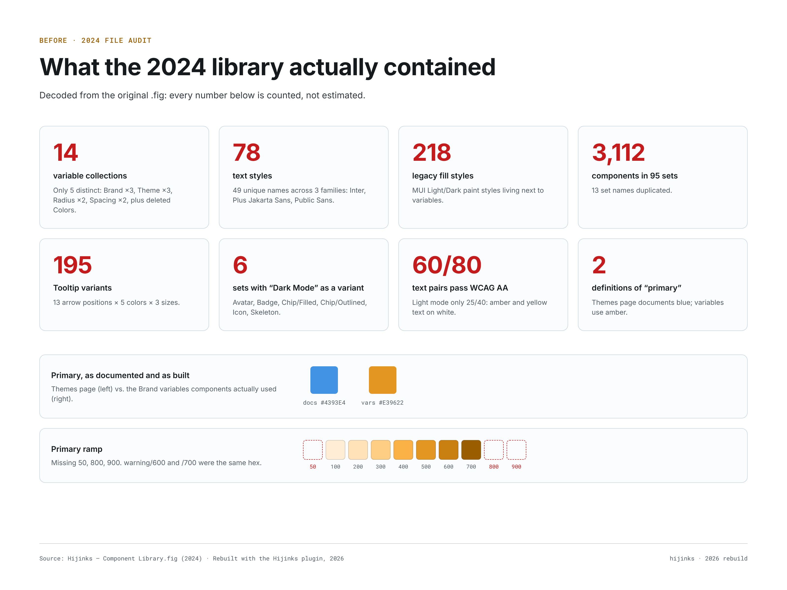
(opens full size)After · the 2026 rebuild
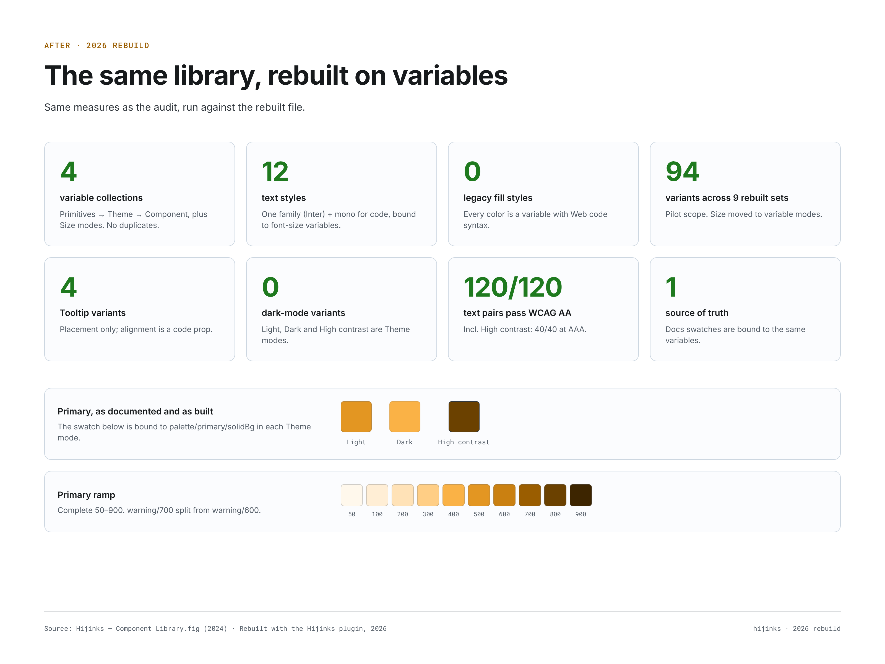
(opens full size)One color, three tiers, three modes · 2026
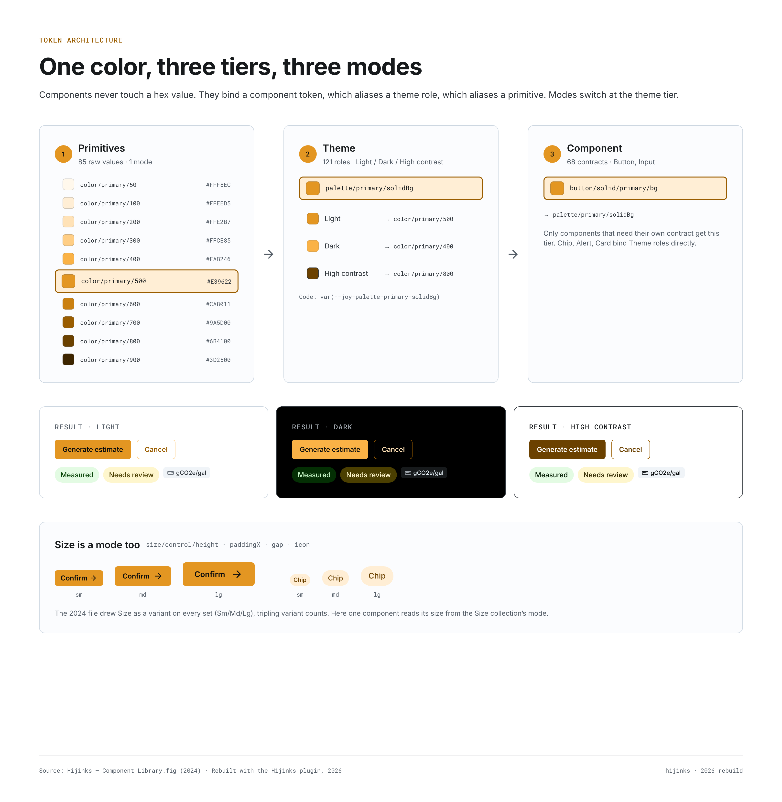
(opens full size)Variants per family, 2024 vs. 2026
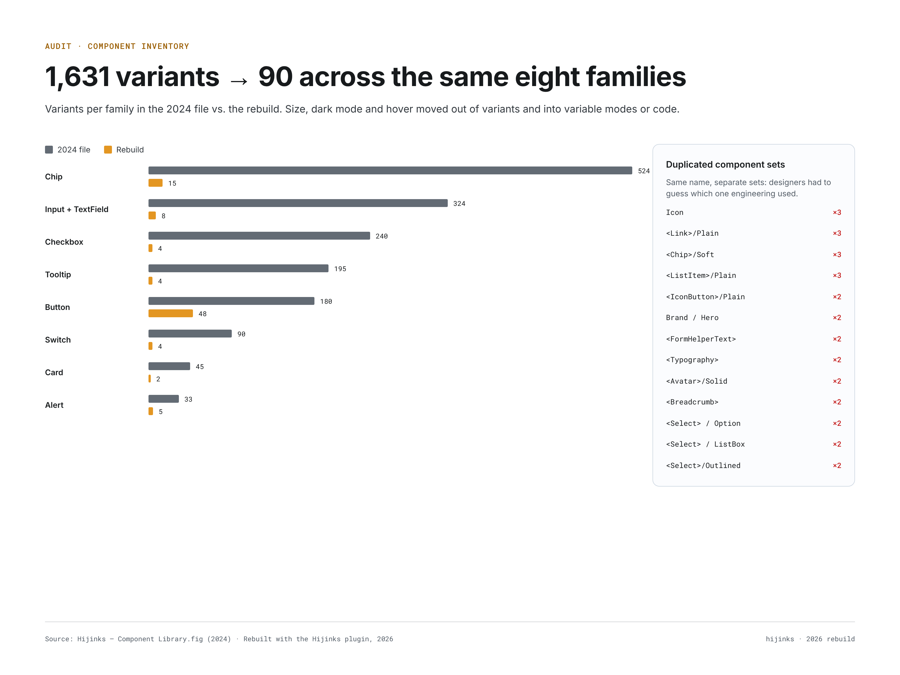
(opens full size)Text contrast, 2024 vs. 2026
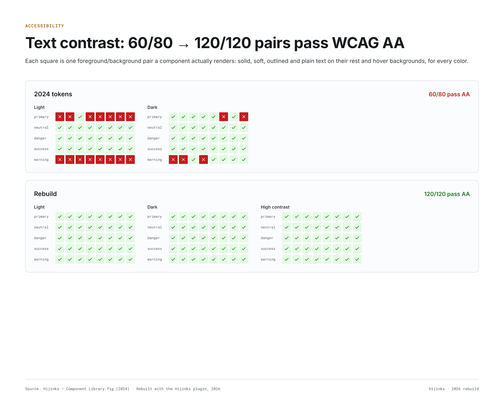
(opens full size)Blueprint v2 · Button
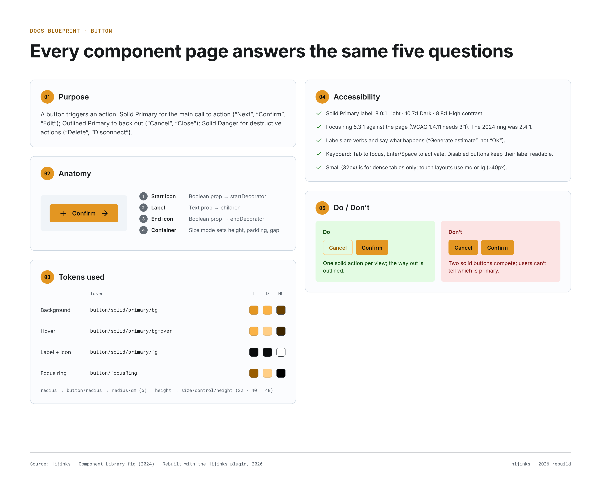
(opens full size)Figma properties to Joy UI props
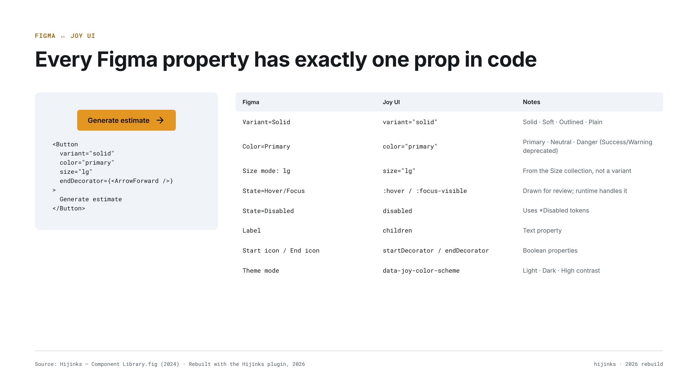
(opens full size)Tokens agents can read
A tokenized system is what keeps AI-generated UI on-brand. The rebuild is set up for it:
Standard token format
The plugin exports variables as W3C DTCG JSON, with modes and code syntax, ready for Style Dictionary.
Code names in Figma
Every color carries its Joy CSS variable, so Dev Mode shows var(--joy-palette-primary-solidBg), never a hex value.
Rules an agent follows
A short guidelines file covers what humans learn from the docs: no raw hex, one Solid Primary per view, and status never shown by color alone.
Target pipeline, built and planned · 2026
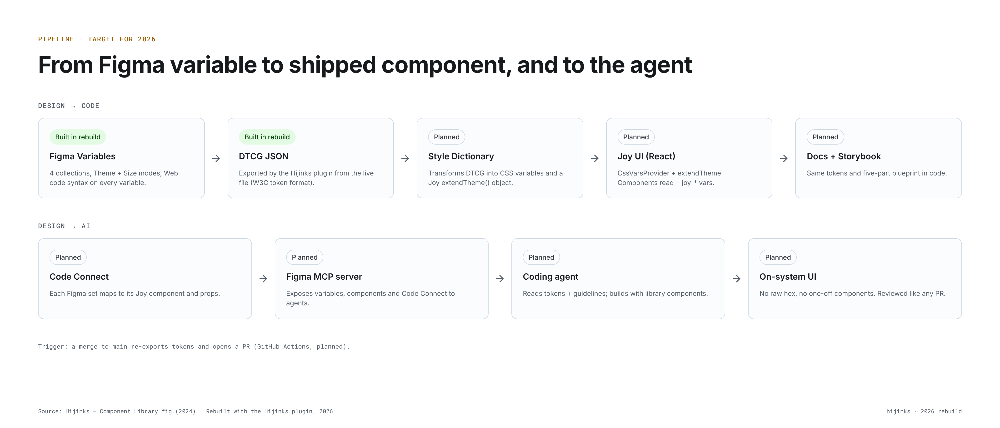
(opens full size)The contract a coding agent follows
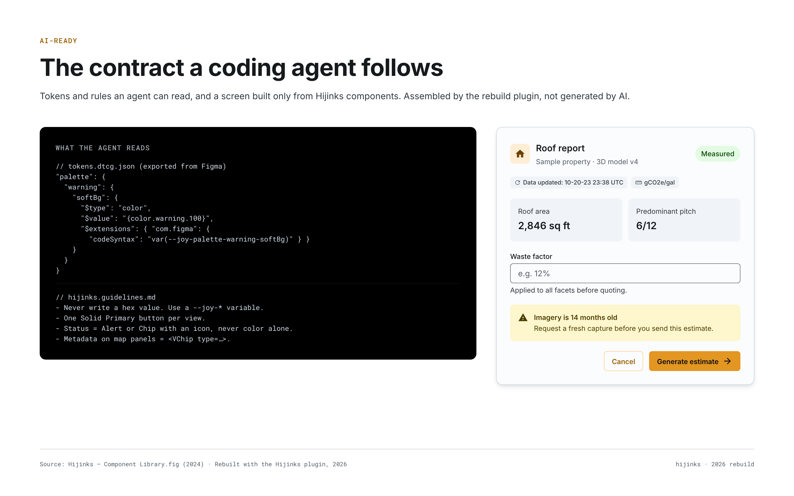
(opens full size)Quick start · data chips on a map panel
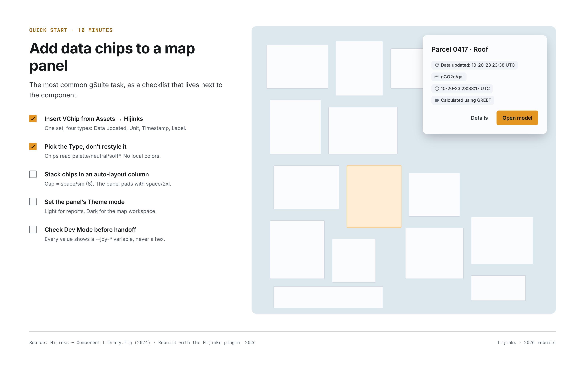
(opens full size)Lessons and what’s next
The hard lesson
Documentation dies in a silo. Guidelines have to live inside the tools teams already use, like Figma libraries and Jira tickets, so nobody goes hunting for answers.
What’s next
The 2024 plan was analytics on the docs pages. The rebuild adds the next step: Code Connect from each Figma set to its Joy component, and the Figma MCP server so coding agents build with the system instead of around it.